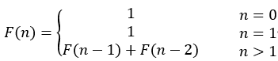
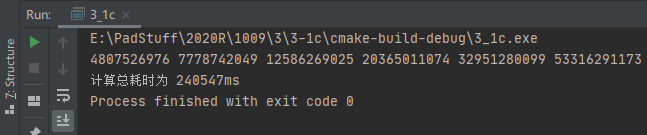
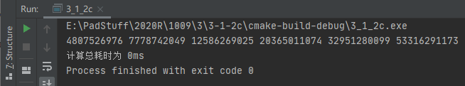
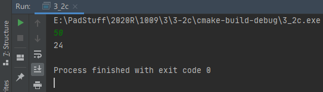
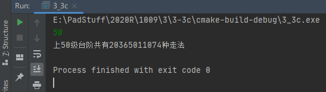
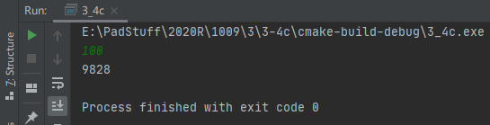
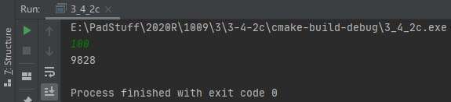

Fibonacci数列
- 无穷数列1，1，2，3，5，8，13，21，34，55，……，称为Fibonacci数列。它可以被递归地定义为:

第n个Fibonacci数可递归地计算如下：
int fibonacci(int n) {
if (n <= 1) {
return 1;
}
return fibonacci(n - 1) + fibonacci(n - 2);
}
1) 编写完整的主函数，分别记录利用上述递归函数求第47, 48, 49, 50, 51,52个Fibonacci数所花费的时间。
程序代码:
1 |
|
运行截图:

运行截图
2) 将递归函数改为尾递归，或者是递推函数，求第47,48,49,50,51,52个Fibonacci数所花费的时间，观察效率是否得到提高。
程序代码:
1 |
|
运行截图:

运行截图
角谷定理
- 角谷定理。输入一个自然数,若为偶数,则把它除以2,若为奇数,则把它乘以3加1。经过如此有限次运算后,总可以得到自然数值1。求经过多少次可得到自然数1。
程序代码:
1 |
|
运行截图:

运行截图
n级台阶计算走法
- 有n级台阶，可以一步上一个台阶，也可以一步上两个台阶，编写程序，计算共有多少种不同的走法。
程序代码:
1 |
|
运行截图:

运行截图
半数集问题
4.半数集问题。
问题描述：给定一个自然数n，由n开始可以依次产生半数集set(n)中的数如下：
(1)n∈set(n);
(2) 在n的左边加上一个自然数，但该自然数不能超过最近添加的数的一半；
(3) 按此规则进行处理，直到不能再添加自然数为止。
例如，set(6)={6,16,26,126,36,136}，半数集set(6)中有6个元素。
输入：整数n(0<n<1000)
输出：半数集set(n)中的元素个数。
请设计递归函数，求出set(n)的个数，并分析算法时间复杂度，对算法进行改进，用程序验证递归算法，以及改进之后的算法。
递归算法:
程序代码:
1 |
|
运行截图:

运行截图
改进之后的算法:
程序代码:
1 |
|
运行截图:

运行截图

![微信分享二维码]()